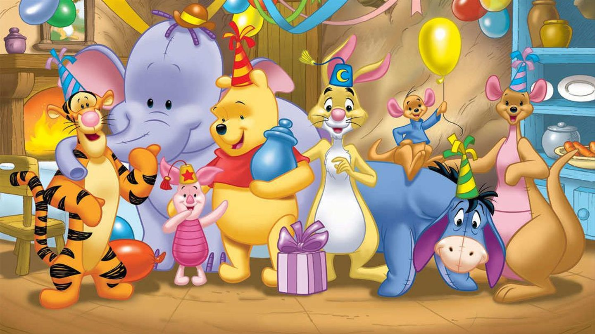

About Winnie-the-Pooh
Winnie-the-Pooh, also called Pooh Bear and Pooh, is a fictional anthropomorphic teddy bear created by English author A. A. Milne and English illustrator E. H. Shepard.
Winnie-the-pooh with his friends
History About Winnie-the-Pooh
- Winnie-the-Pooh first appeared by name on 24 December 1925, in a Christmas story commissioned and published by the London newspaper Evening News. It was illustrated by J. H. Dowd.
- On 6 January 1930, Stephen Slesinger purchased US and Canadian merchandising, television, recording, and other trade rights to the Winnie-the-Pooh works from Milne and created the first Pooh doll, record, board game, puzzle, US radio broadcast, animation, and motion picture.
- The first time Pooh and his friends appeared in colour was 1932, when he was drawn by Slesinger in his now-familiar red shirt and featured on an RCA Victor picture record.
- In 1961, Shirley Slesinger Lasswell licensed rights to Walt Disney Productions in exchange for royalties in the first of two agreements between Stephen Slesinger, Inc., and Disney.
Pooh's other Adaptions
There are many cultural and creative products of Winnie-the-Pooh, especially for toys, movies and books.